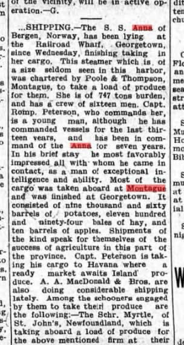

“You Can Find Me Here Too”: The S.S. Anna at Montague
Start with the man at the far right. What looks at first like a pale patch on his jacket has ears: he’s holding a cat. Once you’ve spotted that one, look a little farther left. Above another man’s bent arm, a second pair of ears and a small face appear in profile. Whoever arranged the officers and crew of the Anna for their photograph at Montague made room for at least two cats. The person who wrote on the back had a different challenge for the recipient: can you find me?

A note meant for someone who knew his face
There’s no address, stamp or postmark. The writer simply takes the space he needs, crossing the printed line that divides the back. This is how I read it, keeping the old spelling:
Du kan vel finde mig
her ogsaa
Er jeg ikke lik mig skriv
snart
Din R.
In English, with punctuation supplied: “You can pick me out here too, can’t you? Don’t I look like myself? Write soon. Yours, R.” That little word ogsaa, “too,” makes you wonder what other picture the two of them knew.

Norwegian is the likeliest reading. The spellings finde and mig look Danish to a modern eye, with good reason: one of Norway’s written standards was then very close to Danish. The Norwegian Language Council traces how that spelling changed. The little word lik, meaning “like” or “resembling,” favours Norwegian; the usual Danish form here would be lig. The wording makes much better sense in those two languages than in Dutch. And on one point we needn’t rely on spelling at all: the Island newspaper identifies the vessel as the Anna of Bergen, Norway.
What a ship from Bergen was doing in Montague
Seven years earlier, Agatha had mailed another Montague postcard with as neat an explanation as anyone has given of the autumn waterfront: “This is a picture of what takes place here every fall. Farmers loading vessels.” For a view along the deck itself, turn to Shipping Potatoes, Montague, P.E.I. Neither card names the Anna. What they give us is the Island end of her voyage: the work was familiar enough that Agatha could sum it up in three words.

For this particular cargo we have the shipping column of the Charlottetown Guardian, Saturday, November 1, 1913. Poole & Thompson of Montague had chartered the steamer to take Island produce to Havana. Most of it went aboard at Montague; the ship finished loading at the Railroad Wharf in Georgetown, where the paper said she had been lying since Wednesday. That puts her at Georgetown by October 29. Late October is a good date for the crew photograph at Montague, though nobody wrote the day on the card.
The tally was 9,060 barrels of potatoes, 1,194 bales of hay and ten barrels of apples. Imagine keeping track of those last ten barrels among nine thousand and sixty of something else. The name of the firm responsible turns up on a much later Montague postcard: look past the two former naval launches in card 4617 and there is Poole & Thompson on the warehouse. The 1913 newspaper tells us what went out under that name and where it was bound. It doesn’t tell us when the ship reached Havana.

Does the captain’s initial give R. away?
The paper counted sixteen in the crew. I count fourteen men in the photograph. The newspaper calls the captain Peterson, describes him as a young man and credits him with thirteen years in command, seven of them in the Anna. There is a way of checking back on that last detail. Two years before the Island visit, a Danish casualty report (entry 254) placed an Anna of Bergen under R. Petersen on the eastern reef of Anholt. She had run aground at four in the morning on September 9, 1911, bound from Africa to Memel with phosphate. Part of her cargo went overboard and part into lighters. Four days later she floated free and was towed to Copenhagen.
Here, then, is a captain with the right initial. Maritime historian Harry Holman raised that possibility in his earlier account of this very postcard. I’d leave the identification open. The note doesn’t say “Captain,” we don’t have the other men’s names, and there is no mark beside one of the fourteen men to tell us where to look.
The last voyage of the Anna
The Norwegian ship history records a cargo steamer built at Fevik in 1900, just over 241 feet long. The Guardian’s “747 tons burden” is a useful check on the identification: 747 was her net register tonnage, a measure of capacity rather than the weight of that load of potatoes. For a sense of her shape under way, Jim Rae’s modern painting shows the low hull, tall funnel and a deck cargo of timber in a heavy sea. It depicts a different cargo from her Island one.
On January 19, 1917, the Anna was carrying esparto grass from Almería in Spain to Glasgow when the German submarine UC 16 stopped her west of Ushant. We have unusually close accounts of what happened: the Norwegian consular inquiry in the 1917 wreck reports records testimony from the men themselves. The master was now Captain Erland. What he first took for a little sail turned out, through his glasses, to be a submarine. One of his orders was for the steward to put all the fresh bread into the boats. Erland protested that his ship and cargo were neutral. A boarding party set charges, and the men took to the boats. The Anna went down stern first.
The two boats lost sight of each other. The British steamer Elgin picked up the captain’s party and landed them at Gibraltar. The mate’s boat had used up its rockets when another steamer came into view. In his testimony the mate recalled using his last match to light kerosene-soaked rags; the men gave up the driest bits of their clothing to keep the flame alive. It was seen. The Borneo of Amsterdam took them aboard. Nobody died in the loss of the Anna.
We can follow that little flame all the way to a named rescue ship. We can count the barrels that left an Island wharf. But the one question the postcard actually asks is the one we still can’t answer. Somewhere among fourteen faces is the one R. expected somebody to recognize at a glance.